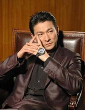

1993年，在古装片《战神传说》中扮演一个武功超群的渔民；同年，主演动作喜剧片《至尊三十六计之偷天换日》，在片中饰演赌术高明的千门高手钱文迪；此外，他还主演了爱情片《天长地久》，在片中塑造了一个风流不羁的江湖浪子形象。 1994年，刘德华投资并主演了剧情片《天与地》，在片中饰演面对恶势力却毫不退缩的禁毒专员张一鹏。1995年，主演赛车励志片《烈火战车》，在片中饰演叛逆、倔强的阿祖，并凭借该片获得第15届香港电影金像奖最佳男主角提名；同年在动作片《大冒险家》中演绎了立仁从小时候父母双亡到长大后进入泰国空军的故事。 1996年，主演黑帮题材的电影《新上海滩》，在片中饰演对冯程程痴情一片的丁力。1997年，担任剧情片《香港制造》的制作人；同年，主演爱情片《天若有情之烽火佳人》，在片中饰演家世显赫的空军少尉刘天伟；12月，与梁家辉联袂主演警匪动作片《黑金》，在片中饰演精明干练、嫉恶如仇的调查局机动组组长方国辉。1998年，主演动作片《龙在江湖》

，饰演重义气的黑帮成员韦吉祥；同年，出演喜剧片《赌侠1999》；此外，他还担任剧情片《去年烟花特别多》的制作人。 1993年，在古装片《战神传说》中扮演一个武功超群的渔民；同年，主演动作喜剧片《至尊三十六计之偷天换日》，在片中饰演赌术高明的千门高手钱文迪；此外，他还主演了爱情片《天长地久》，在片中塑造了一个风流不羁的江湖浪子形象。 1994年，刘德华投资并主演了剧情片《天与地》，在片中饰演面对恶势力却毫不退缩的禁毒专员张一鹏。1995年，主演赛车励志片《烈火战车》，在片中饰演叛逆、倔强的阿祖，并凭借该片获得第15届香港电影金像奖最佳男主角提名；同年在动作片《大冒险家》中演绎了立仁从小时候父母双亡到长大后进入泰国空军的故事。 1996年，主演黑帮题材的电影《新上海滩》，在片中饰演对冯程程痴情一片的丁力。1997年，担任剧情片《香港制造》的制作人；同年，主演爱情片《天若有情之烽火佳人》，在片中饰演家世显赫的空军少尉刘天伟；12月，与梁家辉联袂主演警匪动作片《黑金》，在片中饰演精明干练、嫉恶如仇的调查局机动组组长方国辉。1998年，主演动作片《龙在江湖》，饰演重义气的黑帮成员韦吉祥；同年，出演喜剧片《赌侠1999》；此外，他还担任剧情片《去年烟花特别多》的制作人。